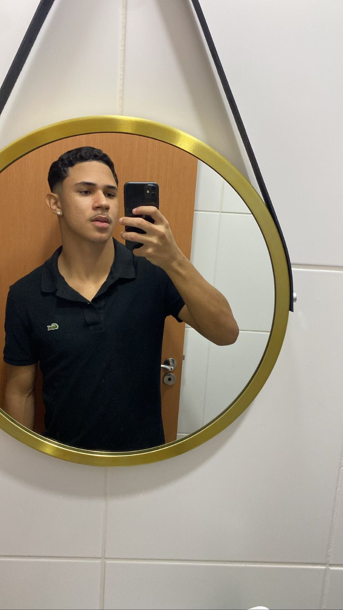

EME Alcina dantas feijão

Meu
Portifolio
Meu nome é Guilherme Dias
Hard skills
Pacote office
Edição de imagens
habilidade com redes sociais
Soft skills
Flexibilidade
Comunicação
Organização
|
|
|
|
|
|
|
|
|
|
|
|
|
|
|
Nos próximos 1 a 2 anos, meu objetivo é iniciar minha trajetória profissional
como educador físico. Planejo obter certificações adicionais, como as de personal
trainer e instrutor de Pilates, além de participar de cursos de especialização em
áreas como nutrição esportiva e reabilitação física. Pretendo, também, adquirir
experiência prática trabalhando em academias de renome e centros de reabilitação
visando aprimorar minhas habilidades de avaliação física e elaboração de programas
de treinamento personalizados.
Em um horizonte de 8 a 10 anos, almejo ocupar uma
posição de destaque no campo da Educação Física.
Tenho o plano de estabelecer meu próprio estúdio de treinamento, com foco em
clientes que buscam não apenas condicionamento físico, mas também bem-estar
integral. Este caminho delineado reflete meu comprometimento em alcançar a
excelência profissional e contribuir de forma significativa para a promoção da saúde
e do bem-estar através da prática da atividade física.
